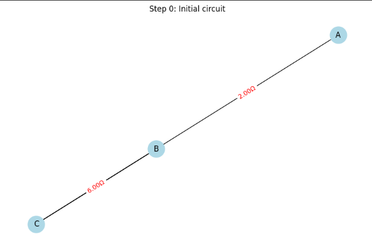

📘 Equivalent Resistance Using Graph Theory
🯠Motivation Calculating the equivalent resistance in an electrical circuit is a fundamental task in electrical engineering and physics. While traditional methods rely on manually applying series and parallel rules, graph theory provides a more scalable solution for complex resistor networks.
By modeling circuits as graphs — where nodes represent junctions and edges represent resistors — we can automate the reduction process.
🧠Algorithm Overview
🔹 Series Connection
If resistors are connected end-to-end:
Nodes: B+, N1, B-
Resistors:
Node1 Node2 Value (Ω) B+ N1 100 N1 B- 200
The total equivalent resistance will be:
𑅠eq = 100 + 200 = 300    Ω R eq ​ =100+200=300Ω (since resistors in series sum up)
phyton
def _combine_series_threaded(self, G, step_count):
changed = False
nodes_to_remove = []
edges_to_add = []
r1_val = 0
r2_val = 0
for node in list(G.nodes()):
if G.degree(node) == 2 and node not in ("B+", "B-"):
neighbors = list(G.neighbors(node))
if len(neighbors) == 2:
u, v = neighbors[0], neighbors[1]
# u-v arasında doğrudan bağlantı yoksa
if G.number_of_edges(u, v) == 0:
edge1_data = G.get_edge_data(u, node)
edge2_data = G.get_edge_data(node, v)
r1_val = next(iter(edge1_data.values()))['resistance']
r2_val = next(iter(edge2_data.values()))['resistance']
R_new = r1_val + r2_val
nodes_to_remove.append(node)
edges_to_add.append((u, v, R_new, f"series_{step_count}_{node}"))
changed = True
break
if changed:
for node in nodes_to_remove:
G.remove_node(node)
for u, v, R_new, key in edges_to_add:
G.add_edge(u, v, resistance=R_new, key=key)
step_count += 1
self.update_status_signal.emit(f"Series combination: {u}-{nodes_to_remove[0]}-{v} combined. New resistance: {R_new:.2f}Ω")
self._draw_and_save_graph(G, f"Step {step_count}: Series {u}-{v} = {R_new:.2f}Ω ({r1_val:.2f}Ω + {r2_val:.2f}Ω)", step_count)
return step_count, changed


🔄 Iterative Reduction Steps Identify and combine series-connected resistors. Identify and combine parallel-connected resistors. Repeat until one equivalent resistance remains.
▶ Example 2: Parallel
Nodes: B+, B- Resistors between B+ and B-:
Resistance 1 Resistance 2 100 Ω 200 Ω
Equivalent resistance for parallel resistors:
1 𑅠eq = 1 100 + 1 200 ⇒ 𑅠eq = 1 1 100 + 1 200 = 66.67    Ω R eq ​
1 ​ = 100 1 ​ + 200 1 ​ ⇒R eq ​ = 100 1 ​ + 200 1 ​
1 ​ =66.67Ω
python
def _combine_parallel_threaded(self, G, step_count):
changed = False
edges_to_remove = []
edges_to_add = []
for u in list(G.nodes()):
for v in list(G.nodes()):
if u == v:
continue
if G.number_of_edges(u, v) > 1:
resistances = [data['resistance'] for key, data in G.get_edge_data(u, v).items()]
try:
inverse_sum = sum(1 / r for r in resistances if r != 0)
R_parallel = 1 / inverse_sum if inverse_sum != 0 else 0
except ZeroDivisionError:
R_parallel = 0
for key in list(G.get_edge_data(u, v).keys()):
edges_to_remove.append((u, v, key))
edges_to_add.append((u, v, R_parallel, f"parallel_{step_count}_{u}_{v}"))
changed = True
break
if changed:
break
if changed:
for u, v, key in edges_to_remove:
G.remove_edge(u, v, key)
for u, v, R_parallel, key in edges_to_add:
G.add_edge(u, v, resistance=R_parallel, key=key)
step_count += 1
self.update_status_signal.emit(f"Parallel combination: Resistors between {u}-{v} combined. New resistance: {R_parallel:.2f}Ω")
self._draw_and_save_graph(G, f"Step {step_count}: Parallel {u}-{v} = {R_parallel:.2f}Ω", step_count)
return step_count, changed


▶ Example 3: Nested
lua Copy Edit A --2Ω--+--B--4Ω--+--C | | 3Ω 6Ω | | +--------+ Steps:
4Ω and 6Ω → parallel: 2.4Ω
Series: 3 + 2.4 = 5.4Ω
Total: 2 + 5.4 = 7.4Ω
📊 Time & Space Complexity
Time: 𝑂(E)
Space: 𝑂(V + E)
🚀 Future Improvements
Graph traversal (DFS/BFS)
Caching repeated subgraphs
GUI or interactive input
python
import networkx as nx
def parallel_resistance(resistors):
"""Paralel bağlı dirençlerin eşdeğerini hesaplar."""
try:
inv_sum = sum(1/r for r in resistors if r != 0)
return 1 / inv_sum if inv_sum != 0 else 0
except ZeroDivisionError:
return 0
def series_resistance(resistors):
"""Seri bağlı dirençlerin toplamını döner."""
return sum(resistors)
def build_circuit_graph():
"""Örnek devreyi graph olarak oluşturur."""
G = nx.MultiGraph()
G.add_nodes_from(['A', 'B', 'C'])
G.add_edge('A', 'B', resistance=2)
G.add_edge('B', 'C', resistance=4)
G.add_edge('A', 'B', resistance=3)
G.add_edge('B', 'C', resistance=6)
return G
def calculate_equivalent_resistance(G):
"""
Örnek devre için eşdeğer direnci hesaplar.
Devre:
A --2Ω--+--B--4Ω--+--C
| |
3Ω 6Ω
| |
+--------+
"""
# Paralel dirençler B-C (4Ω ve 6Ω)
parallel_BC = parallel_resistance([4, 6])
# B düğümünde seri direnç (3Ω + paralel sonucu)
series_B = series_resistance([3, parallel_BC])
# A-B arasındaki seri toplam (2Ω + B'deki seri)
total_resistance = series_resistance([2, series_B])
return total_resistance
if __name__ == "__main__":
G = build_circuit_graph()
Req = calculate_equivalent_resistance(G)
print(f"Toplam eşdeğer direnç: {Req:.2f} Ω")



⚡ Circuit Solver GUI – Equivalent Resistance Calculator
This project is a user-friendly Python application for visually and interactively calculating the equivalent resistance of electrical circuits.
Users can build circuits by adding nodes and resistors, and the program automatically simplifies the network using series and parallel reduction algorithms. Each step is visualized and saved as an image, making it easier to follow the simplification process.

🚀 Features
- ✅ Easy circuit creation via node and resistor input
- 🔠Automatic series and parallel resistance reduction
- 🖼️ Step-by-step visualizations (PNG images) for each reduction
- 📢 Clear status messages and final result display
- 🧹 Option to reset/clear the circuit
- 📥 Download final image of the reduced circuit
ğŸ› ï¸ How to Use
- Enter node names (separated by commas) and click Add Nodes
- Add resistors between nodes with resistance values
- Click Calculate Equivalent Resistance
- View step-by-step visual reductions and final result
📥 Downloads
▶️ Download the Colab Notebook
Use the interactive notebook version to run and visualize the algorithm directly in Google Colab or locally: